Life is matter that became conscious, started copying itself, and began asking why.
Learn Biology out of curiosity — not just to crack entrance exams. Explore all 31 foundational NCERT topics, from the Diversity of Living Organisms to Biodiversity Conservation — begin with a single question that sparks wonder, then follow it all the way to the frontiers of biology, where, like the unexplained glow of a firefly at dusk, today's science still has no answer.
Diversity in the Living World · Cell: Structure & Function · Plant Physiology · Human Physiology · Genetics & Evolution · Ecology & Environment
Dr. Samudra Dasgupta
- PhD in Data Science — University of Tennessee (Specialization: Quantum Computing)
- Master of Science in Engineering Sciences — Harvard University (Graduate Student Fellowship)
- B.Tech (Hons.) in Electronics & Electrical Communication Engineering — IIT Kharagpur (Best Thesis Award)
- MBA — Indian School of Business (Young Leader Award)
Diversity
Diversity in the Living World
Four wildly different kinds of life, crammed into one small pond — so why didn't nature just pick one and stop there?
Look at this picture. That's a young biologist crouched by a village pond at sunrise, and without even trying, she's looking at four totally different kinds of life at once — a heron, a dragonfly, a lotus, a butterfly.
Here's the thing — nobody put those four creatures in that pond on purpose. They each just found their own way of surviving there, over millions of years, without asking anyone's permission. And that's true everywhere on Earth, not just in this one pond. So biologists had a real problem on their hands: with so many different living things around, how do you even keep track of who's who?
They made a rule. Give every living thing one exact name — a name that means the same thing no matter who says it. Say "Panthera tigris" in Kolkata, and a scientist all the way in Tokyo knows exactly what you mean: tiger, and nothing else. That naming system is called taxonomy, and it's been running for about 250 years now.
But here's where it gets strange. In those 250 years, we've only managed to name about 1.8 million species. Now guess how many are actually out there. Not two million. Try five million. Or thirty million. Some scientists say that if you count every last microbe, the number could cross a trillion.
So go back to that biologist in the picture, crouched by the water, notebook open. What if the dragonfly right in front of her has never been seen by science before? What if it doesn't even have a name yet? Nobody would know — not even her.
After 250 years of naming life on Earth, how much of it have we still never even met?
2-Day Crash Course.Master this Chapter.
Click here.
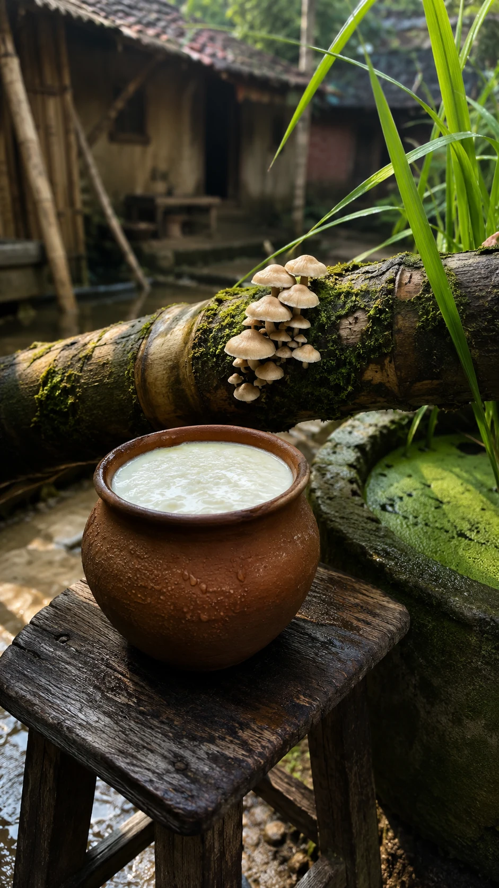
Biological Classification
Sniff that pot of curd — you're standing three feet from four different kingdoms of life, and you never even noticed.
Smell that pot of curd in the photo. That sour tang is bacteria (Lactobacillus) — billions of them, actually, and you can't see a single one. Now look just past it: a mushroom (Agaricus) shoving its way out of a log, paddy leaves (Oryza sativa, the rice plant) leaning in, a smear of green scum (Spirogyra, an alga) in the trough. Four totally different kinds of alive, all within arm's reach of each other.
Turns out, biologists needed rules for exactly this. Does the thing have a nucleus, or not? Does it make its own food, or steal it from something else? Is it built from one cell, or billions? Answer those few questions, and you can sort almost anything alive into one of five kingdoms.
Lactobacillus has no nucleus at all — just genetic material floating loose inside one simple cell. That puts it in Kingdom Monera. Spirogyra, the green scum, has a nucleus but still lives as a simple thread of cells — Kingdom Protista. Agaricus, the mushroom, can't make its own food the way a plant does — it survives by quietly breaking down whatever it's growing on, which puts it in Kingdom Fungi. Oryza sativa, the rice plant, is Kingdom Plantae, obviously. And you, standing there reading all this — Homo sapiens — are Kingdom Animalia. Congratulations — you just found four kingdoms without leaving one courtyard corner, and you were secretly the fifth one all along.
But here's where the five neat kingdoms start to wobble. A virus isn't even made of cells — it can't reproduce on its own unless it breaks into one of your cells and hijacks it. So which kingdom does it belong to? None of them. And prions are stranger still: no genetic material at all, just a misshapen protein that somehow forces healthy proteins nearby to misshape themselves too.
The five kingdoms quietly stop making sense right about here — so is a prion even alive at all?
2-Day Crash Course.Master this Chapter.
Click here.
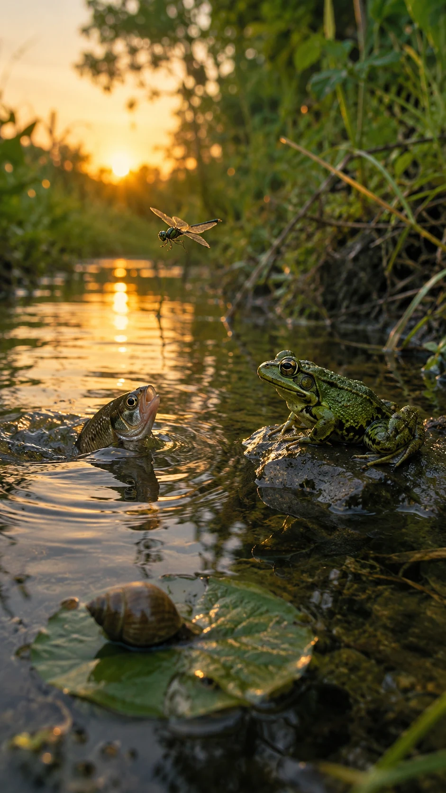
Animal Kingdom
One creek, one heartbeat — a fish rockets across it while a snail hasn't moved an inch. Same water, completely different rules.
Watch the fish (Labeo rohita) in this photo break the surface of the creek — then look down at the snail (Pila globosa) barely moving on a submerged leaf just below it. Same water. Same few seconds. Completely different speed of life.
Turns out, how fast — or how strangely — an animal moves comes down to how its whole body is put together. Some animals are built like a wheel, the same in every direction (radial symmetry) — trouble can come from any side, and it doesn't matter, because every side works the same way. Other animals — like every one of the four animals in this photo — are bilaterally symmetrical instead: one clear left side, one clear right side, and a proper front end with a head. That's not decoration. A dedicated front end gives eyes, mouth, and brain a place to cluster together, wired to sense what's coming and react before it's too late.
Look closer, and there's a deeper split still. The fish (Labeo rohita) and the frog (Euphlyctis cyanophlyctis) share something the snail and the dragonfly don't have at all: a notochord — a flexible rod of support running down the back, before any actual bone ever forms. Every animal with a notochord belongs to one single phylum: Chordata. That's the fish's phylum. That's the frog's phylum. That's your phylum too.
Here's the part that should genuinely unsettle you. Nearly every one of these body plans — radial, bilateral, notochord and all — first shows up in the fossil record within the same narrow 20-million-year window, about 540 million years ago. Before that, life was mostly simple and soft. After that, almost every animal phylum alive today had already appeared, all at once, like someone flipped a switch.
Scientists call it the Cambrian Explosion. Why did evolution suddenly speed up that much, that fast — fast enough to worry Darwin himself?
2-Day Crash Course.Master this Chapter.
Click here.
Structural Organisation
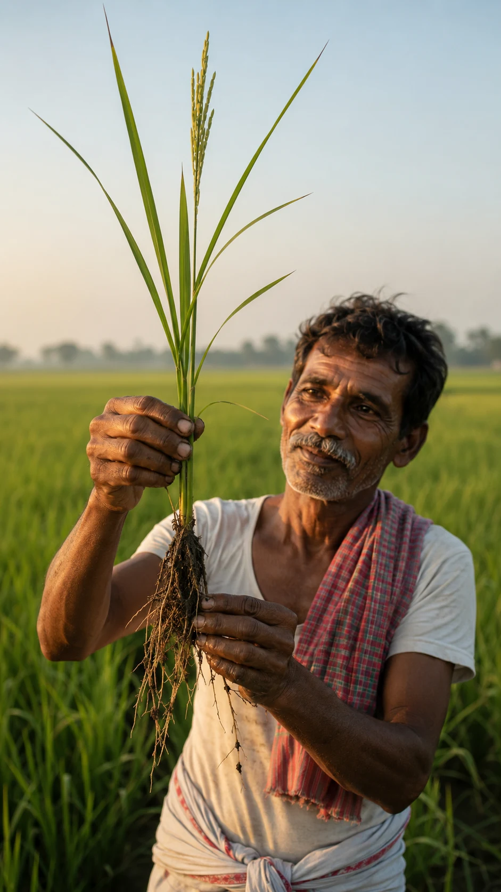
Morphology of Flowering Plants
Pull a rice plant clean out of the mud, and you're holding its whole life story in one hand — root to flower, all at once.
Look at what the farmer is holding up in this photo — one whole rice plant (Oryza sativa), roots dripping mud, pulled straight out of the field. Everything that plant will ever be is sitting right there in his hand: the roots that drank the water, the stem that held it up, the leaves that fed it, even a tiny flower cluster just starting to form at the top.
Start at the bottom. Those muddy roots aren't just holding the plant down — they're built to pull water and minerals out of the soil, and different plants build them differently. Rice (Oryza sativa) grows a fibrous root system: a tangle of thin roots, all roughly the same size, spreading wide instead of deep. A mustard plant instead grows one thick taproot that drives straight down. Same job — anchor the plant, drink the soil — solved in two completely different shapes.
Above the soil, the stem's only job is to hold everything up toward the sun, and the leaves are the plant's actual food factory — each one arranged along the stem so it doesn't block the sunlight of the leaves below it. Sounds simple. It isn't. A banyan tree's hanging aerial roots, a cactus's swollen water-storing stem, a pea plant's leaf that's turned itself into a coiling tendril — all three are technically the same organ as the rice plant's root, stem, or leaf, just reshaped by evolution to solve a completely different problem.
Now look again at that tiny flower cluster just starting to bud at the top of the plant in the farmer's hand. A few weeks ago, that exact same growing tip could have become just another leaf instead. Something inside the plant flipped a switch, and it started building a flower instead — using the very same starting cells.
Botanists have found some of the signals involved — but how does one growing tip actually "decide" whether to become root, stem, leaf, or flower?
2-Day Crash Course.Master this Chapter.
Click here.
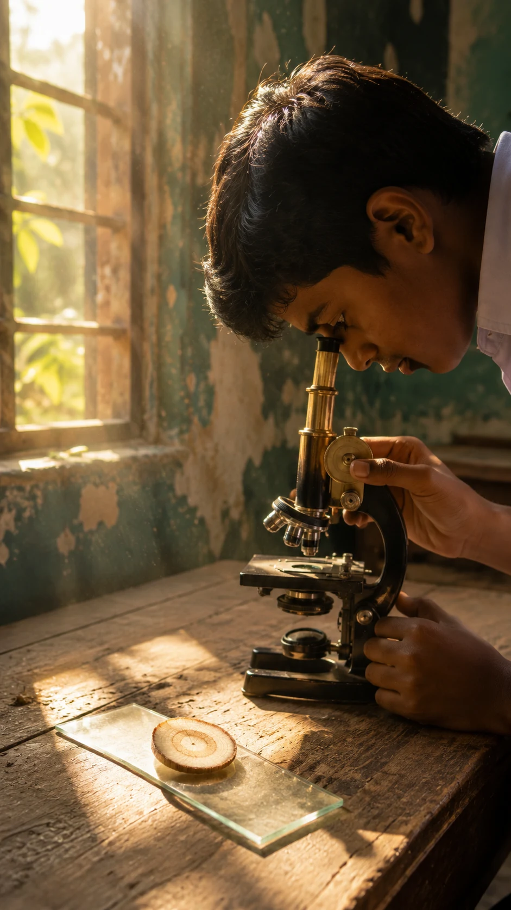
Anatomy of Flowering Plants
Slice a stem clean in half and hold it to the sunlight — suddenly it looks like something engineered, not something that just grew.
Look at the slide glowing in this photo. That thin, almost see-through slice is a cross-section of a plant stem, and the student peering at it through the microscope is looking at something no unaided eye could ever pick apart: rings inside rings, a hidden structure built cell by cell.
Slice open a sunflower stem (Helianthus annuus) like the one on this slide, and you'll find three separate systems stacked inside it. An outer skin — the epidermis — keeps the plant from drying out. A middle layer — ground tissue — stores food and holds the stem's shape. And running through the middle, in a neat ring, sit bundles of vascular tissue: the plant's own plumbing, one pipe carrying water up from the root, another carrying food down from the leaves.
Now cut open a maize stem (Zea mays) instead, and that neat ring is gone — the same bundles are scattered randomly through the stem, like someone dropped them in. Cut a sunflower stem again and look closer, and you'll find something maize doesn't have at all: a thin layer of cells called the cambium, sitting quietly between the water pipes and the food pipes. That single ring of cells is the entire reason a sunflower stem can slowly thicken year after year, while a maize stem — no matter how old it gets — never grows a single millimetre wider.
That's the cambium's whole secret: a paper-thin ring of cells that just keeps dividing outward, year after year, sometimes for centuries, in a tree far older than the people standing under it. Every cell in that ring has to divide at almost exactly the same rate, in almost exactly the same direction, with no brain, no nerves, and no central command centre telling it what to do.
How do thousands of separate cambium cells stay this perfectly in sync, year after year, with nothing in charge?
2-Day Crash Course.Master this Chapter.
Click here.
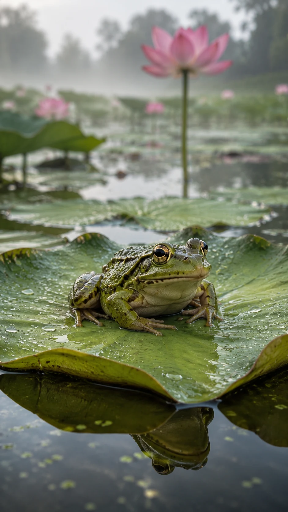
Structural Organisation in Animals
That frog isn't doing anything special on its lotus leaf — except quietly running every organ system your biology textbook is about to explain.
Look at the frog (Hoplobatrachus tigerinus) resting on that lotus leaf in the photo. It isn't doing anything remarkable — just sitting, breathing, waiting. But biologists have used exactly this animal, for over a century, to teach how a whole vertebrate body is actually organised.
Here's why. A frog is a chordate, just like you, with the same basic organ systems packed into a much smaller, simpler body: a heart pumping blood through a circulatory system, lungs handling gas exchange, a stomach and intestine running the digestive system, a spinal cord and brain running the nervous system. Open one up, and every organ sits roughly where you'd expect it to, without the extra complexity of fur, multiple stomach chambers, or a rib cage in the way.
Hoplobatrachus tigerinus takes this even further. Watch it sitting motionless on a lotus leaf like this, half in the water, half out — that's not just resting posture, it's respiration. A frog breathes through its lungs when it's active, but it also breathes directly through its moist, permeable skin, especially when it's still like this. Two separate breathing systems, running at the same time, in the same small body.
But here's the part that still puzzles biologists. During the harshest months of Indian summer and winter, Hoplobatrachus tigerinus disappears completely — burying itself in mud and shutting its body down almost entirely, sometimes for weeks. Its heart rate drops, its metabolism nearly stops, and then, when the rains return, it simply comes back to life and resumes normal function.
How does a frog's body safely power down that far, then switch itself back on again without any damage?
2-Day Crash Course.Master this Chapter.
Click here.
Cell
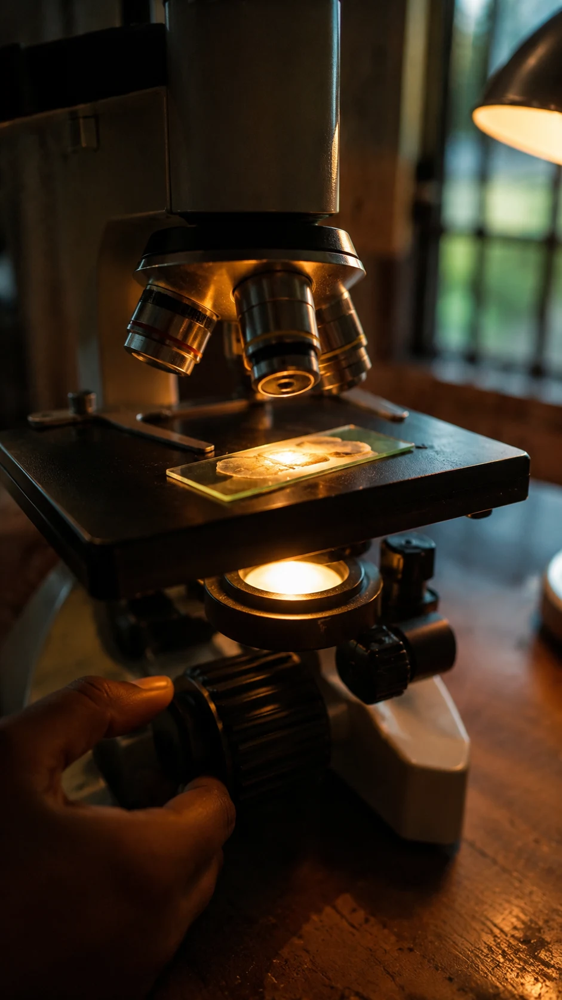
Cell: Structure and Functions
That glowing sliver under the microscope is just onion — but zoom in, and you're staring at the same basic building block that built you.
Look at that slide glowing under the microscope in the photo. It's just a paper-thin peel of onion (Allium cepa), but backlit like this, you can see something remarkable: neat, brick-like compartments, packed edge to edge, each one alive.
Those compartments are cells, and in the 1830s, two scientists studying plants and animals separately noticed something odd: every living thing they looked at, plant or animal, was built from the exact same kind of tiny compartment. Almost two decades later, a third scientist added one more rule — every cell comes only from a cell that already existed before it. Put those ideas together, and you get cell theory: the basic unit of every living thing on Earth, without exception, is the cell.
But not every cell is built the same way. The onion cell on this slide has a nucleus — a proper compartment holding its genetic material, sealed off from the rest of the cell. Biologists call that a eukaryotic cell, and it's what you're made of too. Bacteria don't get this luxury. Their genetic material just floats loose inside the cell, with no wall around it at all — a prokaryotic cell, simpler, older, and still, after billions of years, still very much alive and everywhere.
Here's where it gets strange. Look inside a eukaryotic cell like the one on this slide, and two of its tiniest structures — mitochondria, and in a plant cell, chloroplasts too — carry their own separate DNA, completely different from the DNA in the nucleus. The best explanation biologists have is that both were once free-living bacteria, swallowed whole by a larger ancestral cell roughly 1.5 to 2 billion years ago — and instead of being digested, they stayed, and every complex cell since has carried their descendants.
Why did that one swallowing event, out of billions of years of cellular history, seem to happen only once — and give rise to every plant, animal, and fungus alive today?
2-Day Crash Course.Master this Chapter.
Click here.
Biomolecules
Rice, dal, curd, and mustard seeds on a kitchen counter — you're already looking at the four molecules every living cell is built from.
Look at this kitchen counter in the photo. Rice, soaked lentils, a small pot of curd, a scatter of mustard seeds — it looks like breakfast. It's also, if you look at it the right way, a perfect biochemistry lesson.
Rice (Oryza sativa) is almost pure carbohydrate — long chains of sugar, strung together purely for storing energy. The lentils (masoor dal) are mostly protein, built from twenty different amino acids strung together in a precise order, folded into a shape that decides exactly what each protein can do. The mustard seeds are packed with lipids — fat molecules, the densest energy storage life has ever invented. And the curd? That's what happens when a protein-cutting enzyme, made by Lactobacillus bacteria, gets to work on milk proteins and curdles them into something completely different.
That last one is the real magic. Enzymes are proteins built to do one very specific job, and they do it almost unbelievably fast — speeding up a reaction that might otherwise take years down to a fraction of a second, sometimes by a factor of a trillion. Nearly every reaction keeping you alive right now, digesting this breakfast included, is running through some enzyme quietly doing its one job.
Here's what puzzled biochemists for decades. A single protein, like the ones in that bowl of lentils, is a chain of hundreds of amino acids, and it could theoretically twist itself into more possible shapes than there are atoms in the visible universe. Yet inside a cell, it finds its one correct folded shape in a few thousandths of a second, every single time — a puzzle called Levinthal's paradox. The answer turned out to be that a protein never actually searches at random. It slides down a smooth, funnel-shaped energy landscape straight toward the correct shape, the same way water finds the bottom of a valley without testing every possible path down the mountain first.
So why do some proteins, sliding down that very same landscape, occasionally fold the wrong way instead — clumping into the tangled protein plaques behind diseases like Alzheimer's?
2-Day Crash Course.Master this Chapter.
Click here.
Cell Cycle and Cell Division
Every shoot in this nursery came from one rice grain — and every one of them grew the exact same way: by dividing, over and over.
Look at this rice nursery bed in the photo, dozens of identical seedlings pushing up through shallow water at sunrise. Every one of them started as a single cell inside a rice grain (Oryza sativa). Everything you see now — every leaf, every root hair — exists because that one cell copied itself, and then copied itself again, over and over.
That copying process is called the cell cycle, and it runs in careful stages. First the cell grows and does its normal job. Then it copies its entire genetic material, letter for letter. Only after that's done does it actually split into two — a process called mitosis. Each of the two new cells gets an exact, complete copy of the original's chromosomes. Count the chromosomes in one onion root tip cell (Allium cepa, a classic subject for watching mitosis under a microscope) and you'll find sixteen. Count them in any of its daughter cells, and you'll find exactly the same sixteen, every time.
Mitosis is how that rice seedling grows taller, how a cut on your finger heals, how your body replaces skin cells you shed every day. But there's a second, stranger kind of division, reserved only for making eggs and sperm, called meiosis. Instead of copying chromosomes and keeping the number the same, meiosis cuts the chromosome number exactly in half — and while it's at it, shuffles genetic material between chromosome pairs, so that no two sperm or egg cells a person makes are ever genetically identical.
Every seedling in this nursery bed will eventually stop growing at roughly the same height. Something inside each plant is counting, deciding exactly when to stop dividing and start doing something else instead. The same question applies to your own body — a liver can regrow to almost exactly its original size after injury, then stop precisely on cue.
What exactly tells a liver, or a rice seedling, that it has divided enough and needs to stop?
2-Day Crash Course.Master this Chapter.
Click here.
Plant Physiology
Photosynthesis in Higher Plants
Watch the sunlight burn straight through those paddy leaves — it isn't just passing through, it's being captured atom by atom.
Look at the light in this photo, streaming straight through the paddy leaves at sunrise. That's not just pretty morning light — inside every one of those translucent green leaves, that same sunlight is being grabbed, split apart, and rebuilt into food, right now, as you read this.
Here's the first half of the trick. Inside the leaf, a green pigment called chlorophyll grabs particles of sunlight and uses that energy to do something almost violent: it rips a water molecule apart. That's where the oxygen you're breathing right now actually comes from — split straight out of water, and released as a waste product. The energy from that split gets stored in two portable battery molecules, ATP and NADPH, ready to be spent.
Those two battery molecules power the second half: pulling carbon dioxide straight out of the air and stitching its carbon atoms onto a growing sugar chain, one at a time, in a loop called the Calvin cycle. The enzyme doing the actual grabbing is called RuBisCO — and it happens to be the single most abundant protein on planet Earth, found in nearly every leaf of nearly every plant that exists.
But RuBisCO has a strange, ancient flaw. Roughly one time in every four or five, it grabs an oxygen molecule instead of a carbon dioxide molecule by mistake — they're similar enough in size that it occasionally confuses the two. When that happens, the plant is forced to burn some of the sugar it just built, just to clean up the error, in a wasteful process called photorespiration. Rice (Oryza sativa) pays this tax on every hot, sunny day. Maize (Zea mays) evolved a clever extra step that mostly avoids it — but rice, and most plants on Earth, never did.
Why did the most abundant enzyme on the planet never fix this exact flaw, even after three billion years of evolution?
2-Day Crash Course.Master this Chapter.
Click here.
Respiration in Plants
That clay pot of soaking rice isn't just softening overnight — it's quietly gasping for air, and fermenting because it can't get enough.
Look at that pot of rice in the photo, soaking overnight in water, steam still rising from it at dawn. It looks like simple soaking. It's actually plant respiration, caught in the act, running out of oxygen.
Every living plant cell, including the ones in that rice grain (Oryza sativa), constantly breaks down sugar for energy, starting with an ancient first step called glycolysis — splitting one sugar molecule into two smaller pieces, a process so old that literally every living thing on Earth still uses it. Normally what happens next needs oxygen. But submerge that rice grain in water overnight, and oxygen barely reaches it. Cut off from air, the cell switches to a fallback plan: fermentation, converting those broken sugar pieces into a small amount of alcohol and carbon dioxide instead — which is exactly why overnight-soaked rice picks up that faint sour, slightly fermented taste by morning.
Give that same cell enough oxygen instead, and it does something far more efficient: it feeds those broken sugar pieces into the Krebs cycle and then an electron transport chain, squeezing out far more usable energy from the same starting sugar. Fermentation is a rushed, oxygen-starved shortcut. Full aerobic respiration is the careful, complete version — and every plant cell can switch between the two depending on how much oxygen it can actually get.
Here's the part that should surprise you. Glycolysis, that very first splitting step happening in this soaking rice grain, is essentially identical in a bacterium, in a mushroom, in a blue whale, and in you. Of all the possible ways evolution could have solved the problem of breaking down sugar, life settled on this one path, over three and a half billion years ago, and never seriously deviated from it since.
Was glycolysis really the best possible chemistry could do, or just a frozen accident life got stuck with early on? Biologists still don't know.
2-Day Crash Course.Master this Chapter.
Click here.
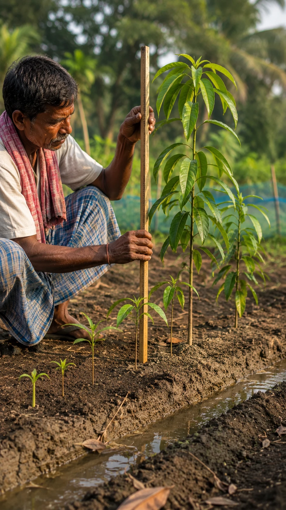
Plant Growth and Development
A tiny mango seed and a tree that could outlive you both are, right now, the exact same plant — just at different ages.
Look at these mango saplings in the photo, lined up in the nursery, some barely taller than the farmer's hand, others already reaching his shoulder. Every one of them came from the same kind of seed (Mangifera indica), and every one of them is following the exact same instructions — just at a different point in the process.
Growth sounds simple — a plant just gets bigger. But size alone doesn't explain how a single fertilised cell turns into a root here, bark there, a leaf somewhere else. That second process is called differentiation, and it's why a mango sapling doesn't grow as one shapeless green blob. Different cells, all carrying identical genetic instructions, switch on completely different parts of those instructions depending on where they end up.
None of this happens by accident. A handful of plant hormones — auxin, gibberellin, cytokinin, and a few others — are constantly produced in tiny amounts and shipped around the sapling, telling cells when to lengthen, when to branch, when to flower. Take a single differentiated cell from any of these saplings, feed it the right cocktail of these same hormones in a lab dish, and it can un-become whatever it was and grow into an entirely new mango plant from scratch.
That trick — one ordinary cell rebuilding an entire organism — is called totipotency, and almost every plant cell keeps this ability for its whole life. Your own cells mostly lose it within days of the embryo forming, and never get it back.
Why did plants hang on to this ability so completely, while animal cells like yours almost entirely gave it up?
2-Day Crash Course.Master this Chapter.
Click here.
Human Physiology
Breathing and Exchange of Gases
Watch his breath turn to fog in the cold morning air — that small cloud is proof of a trade happening inside him, right now.
Look at the boatman in this photo, rowing on the river at first light, his breath hanging in the cold air as a small white cloud. That fog isn't just warm air meeting cold air. It's visible proof of a trade his body is making, roughly twelve to twenty times every minute, whether he thinks about it or not.
Every time his chest rises, muscles in his ribs and diaphragm pull his chest cavity wider, dropping the air pressure inside his lungs just enough that outside air rushes in to fill the gap. Deep inside those lungs, oxygen crosses into his blood through millions of tiny air sacs called alveoli, and carbon dioxide crosses the other way, out of the blood and into the next breath he exhales — the very cloud hanging in front of his face right now.
Once that oxygen crosses into his blood, it hitches a ride on haemoglobin inside his red blood cells, while most of the carbon dioxide heading the other way travels dissolved as bicarbonate, quietly buffering his blood as it goes. And here's the strange part: the part of his brain deciding when to trigger his next breath isn't actually watching his oxygen levels at all. It's watching carbon dioxide instead — the waste gas, not the one he needs.
Breathing is one of the only body processes you can take over on purpose — hold this breath, speed that one up — and yet it always snaps back to running on its own the moment you stop paying attention.
How does the brain hand control back and forth between an automatic rhythm and a conscious override, without the two systems ever colliding?
2-Day Crash Course.Master this Chapter.
Click here.
Body Fluids and Circulation
Two fingers on a wrist, one steady rhythm — behind it, a pump that has never once stopped to rest since before this man was born.
Look at this photo — a health worker's two fingers resting lightly on an elderly villager's wrist, feeling for his pulse. What she's actually counting is the rhythm of a hollow muscle roughly the size of his fist, one that has been beating, without a single day off, since a few weeks after he was conceived.
That pulse is his heart pushing blood out through his arteries in one coordinated squeeze, then relaxing to refill, over and over. The blood it's pushing is mostly plasma — a straw-coloured fluid — carrying red blood cells for oxygen, white blood cells for defence, and platelets to plug any leaks. His heart actually runs two separate loops at once: one sending blood to his lungs for fresh oxygen, another sending that oxygen-rich blood out to the rest of his body — a system called double circulation.
Here's what makes that pulse under her fingers even stranger. His heart doesn't wait for his brain to tell it to beat. A tiny patch of specialised cells inside it, called the sinoatrial node, generates its own electrical signal, on its own schedule, entirely independent of his brain. Cut a heart's connection to the nervous system entirely, and in the right conditions, it will keep beating on its own for a while, powered by nothing but that internal patch of cells.
That same patch of cells first switches on inside a human embryo only a few weeks after conception — long before there's a brain, or even a proper nervous system, to give it any instructions at all.
So what actually tells the very first heartbeat, in an embryo with no brain yet, exactly when and how to start?
2-Day Crash Course.Master this Chapter.
Click here.
Excretory Products and their Elimination
Watch that stream of clear water burst from the pump — your own kidneys are running the exact same trick, just in reverse, right now.
Look at the water gushing from this hand pump in the photo, crystal clear, pulled straight up from underground. Somewhere inside you, right now, your kidneys are doing something similar but backwards — pulling your entire blood supply through a filter, over and over, all day, every day, for your whole life.
Each kidney holds roughly a million tiny filtering units called nephrons. Blood gets forced through a ball of capillaries at the top of each one, squeezing out water, salts, and waste into a long, twisting tube. As that filtered fluid travels down the tube, most of the water and useful salts get quietly pulled back into the blood, leaving only the waste — urea, excess salts, whatever the body doesn't need — to continue on as urine. A clever hairpin loop partway down the tube lets the kidney concentrate that final urine up to four times saltier than the blood it started from.
How much water actually gets pulled back depends on a hormone called ADH, released in larger or smaller amounts depending on whether the body is dehydrated or overhydrated. Run a long race in the heat, and your kidneys will reabsorb almost every drop of water they can. Drink too much water too fast, and they'll let far more of it go.
What's remarkable is how fast this recalibration happens — within minutes of a big meal, a hard workout, or a hot afternoon, your kidneys have already adjusted their filtering to match.
How does a kidney sense the body's exact water and salt balance, in real time, precisely enough to recalibrate itself within minutes?
2-Day Crash Course.Master this Chapter.
Click here.
Locomotion and Movement
Freeze this throw for one instant, and you're looking at billions of molecular motors firing in perfect unison.
Look at this photo — one wrestler mid-throw, muscles straining, the other already leaving the ground. That single explosive movement is the visible result of something happening on a scale far too small to see: inside every straining muscle fibre, billions of microscopic motors are firing at once.
Muscle is built from repeating units called sarcomeres, each one packed with two kinds of protein filament: thin actin filaments and thick myosin filaments. When a nerve signal arrives, tiny myosin heads reach out, grab the actin filaments beside them, and pull — using energy from ATP, the cell's universal fuel — sliding the two filaments past each other and shortening the whole sarcomere. Multiply that shortening across millions of sarcomeres stacked end to end, and you get an entire muscle contracting hard enough to launch a grown man off the ground.
None of that pulling would do anything useful without a skeleton to pull against. Bones act as rigid levers, joints act as hinges, and muscles nearly always work in opposing pairs across those joints — one contracting to bend a limb, its partner contracting to straighten it back out. The wrestler's throw is really just dozens of these opposing pairs firing in a precisely timed sequence.
Here's the part that's still not fully worked out. Nobody individually tells each of the billions of myosin heads in that wrestler's arm exactly when to pull.
So how do billions of separate molecular motors, with nothing supervising them, manage to pull in such tight unison that a whole arm moves as one smooth motion?
2-Day Crash Course.Master this Chapter.
Click here.
Neural Control and Coordination
By the time you'd have thought "there's a bite," his hand has already moved — his brain wasn't even the one that decided.
Look at this photo — the instant a fish strikes, the fisherman's forearm is already tensed, the rod already bending, water already flying. All of that happened faster than he could have consciously noticed the tug at all.
A signal like that travels as an electrical impulse along nerve cells called neurons, each one normally sitting at a small resting voltage across its membrane. The instant the fish tugs the line, sensory neurons in his hand flip that voltage in a rapid, self-propagating wave called an action potential — and in neurons wrapped in a fatty insulating sheath called myelin, that wave can leap forward at speeds of over a hundred metres per second.
For a reaction this fast, the signal often doesn't even travel all the way to the brain first. It can shoot straight into the spinal cord and back out to the muscle in a short loop called a reflex arc, contracting the arm before the brain has finished registering that anything happened at all. The conscious "I felt a bite!" moment arrives afterward, almost as an afterthought.
Every part of this — the voltage, the impulse, the reflex loop — is well understood, wire by wire. But somewhere among roughly 86 billion of these neurons, all just following the same simple electrochemical rules, all of it somehow adds up to him actually feeling something: the surprise, the excitement, the sense of "I caught it."
How do billions of neurons, each just obeying simple electrical rules, add up to a single, unified feeling — the one thing every one of us is having right now?
2-Day Crash Course.Master this Chapter.
Click here.
Chemical Coordination and Integration
One tiny molecule, diluted almost to nothing in her blood, is quietly rewriting how her whole body behaves.
Look at this quiet moment in the photo — a mother feeding her infant. What looks like a simple, tender act is also a hormone doing exactly what it evolved to do, at a concentration so low it would be almost impossible to detect without special equipment.
Unlike a nerve signal, which fires down one specific wire to one specific target, a hormone like oxytocin gets released straight into the bloodstream from a gland at the base of her brain, and travels everywhere at once. Only cells built with the right matching receptor actually respond to it — in this case, cells in her breast that release milk, and circuits in her own brain that deepen the bond she feels toward her child.
Oxytocin is just one hormone among dozens. The heart releases one that helps regulate blood pressure. The kidney releases one that tells bone marrow to make more red blood cells. The stomach and intestine release several that manage digestion and appetite. Chemical coordination in the body isn't limited to a few "official" endocrine glands — nearly every organ moonlights as one when it needs to send a message somewhere else.
But the same hormone can do completely different things in different parts of the body — adrenaline, for instance, speeds up the heart while simultaneously widening blood vessels in some tissues and narrowing them in others, all from the exact same molecule circulating everywhere at once.
So how does each target cell "know" which specific way to respond to the very same hormone that just reached every other cell in the body too?
2-Day Crash Course.Master this Chapter.
Click here.
Reproduction
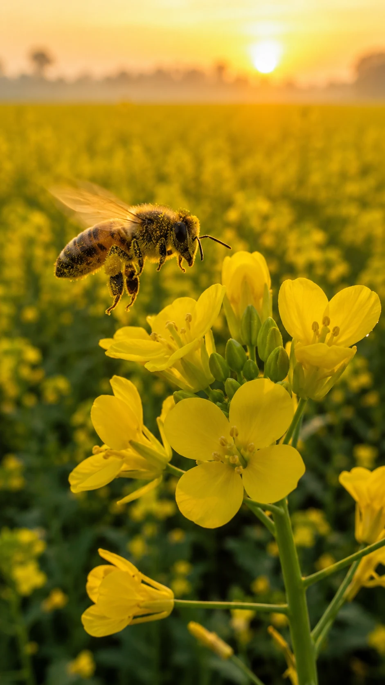
Sexual Reproduction in Flowering Plants
That bee didn't come here to help the flower reproduce — but it's about to, whether it meant to or not.
Look at the bee in this photo, dusted head to leg in yellow pollen, hovering over a mustard flower (Brassica) at sunrise. It came for the sugar. What it's about to deliver, completely by accident, is the flowering plant's entire reproductive future.
Every flower is built to make this accident happen. Its stamens produce pollen grains, each one carrying the plant's male genetic material. Its pistil holds the ovule deep inside, protecting the egg cell waiting within. Pollination is simply pollen making the trip from one to the other — sometimes by wind, but very often, like here, by an insect that has no idea it's doing anything more than eating breakfast.
Once a pollen grain lands and germinates, it delivers not one but two sperm cells into the ovule — and this is where flowering plants do something no other organism on Earth does. One sperm fertilises the egg cell, forming the embryo. The other fuses with two separate nuclei inside the same ovule, forming a completely different tissue called the endosperm, whose only job is to feed the growing embryo. Two fertilisation events, happening in the same instant, building two different things.
No gymnosperm — no pine, no cycad, none of the plants that came before flowers evolved — does anything like this. And yet flowering plants that do it now make up roughly nine out of every ten plant species alive on Earth.
Why did this strange, doubled-up fertilisation trick give flowering plants such an overwhelming evolutionary edge over everything that came before them?
2-Day Crash Course.Master this Chapter.
Click here.
Human Reproduction
Everyone in this photo, and everyone reading it, began as something smaller than the dot on this page.
Look at this photo — a quiet check-up at a rural health centre, a new life still weeks from being seen. It's easy to forget that every single person, including her, including you, once existed as a single cell, smaller than anything the eye could ever pick out.
That single cell forms when a sperm and an egg, each produced through a specialised kind of cell division, meet and fuse — usually somewhere in the fallopian tube. What follows is a race against time. The fertilised egg has to travel down to the uterus and implant itself into the uterine lining within a narrow window of just a few days, while that lining is briefly, precisely receptive. Arrive too early, or too late, and even a perfectly healthy embryo simply fails to implant at all.
Once implantation succeeds, an entirely new organ — the placenta — forms just to keep that pregnancy going, releasing hormones that hold the uterine lining in place for the next nine months. Only right at the very end does a completely different hormone signal take over, triggering labour, and then milk production, right on cue.
A striking number of fertilised eggs, even from perfectly healthy parents, never make it through that implantation step at all — quietly failing before anyone even knows a pregnancy had begun.
What exact signal opens that brief implantation window between embryo and uterus — and why does it fail to open so often, even in healthy pregnancies?
2-Day Crash Course.Master this Chapter.
Click here.
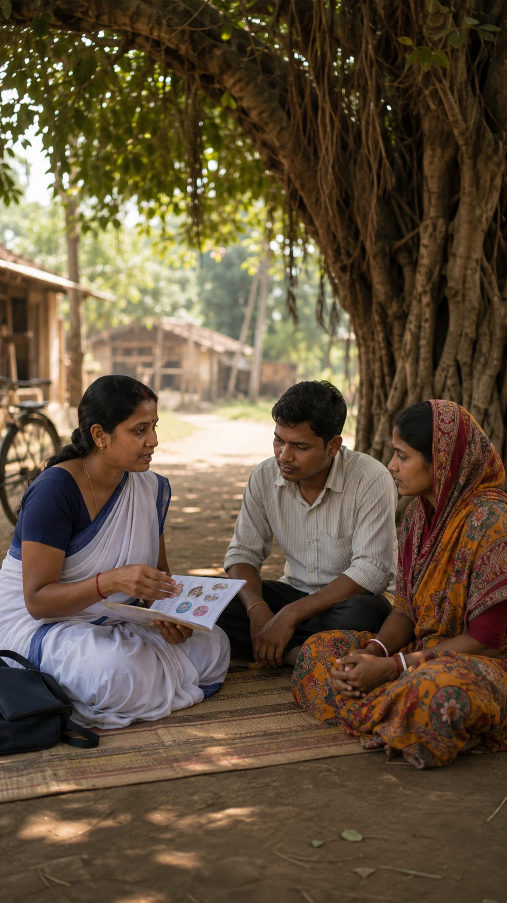
Reproductive Health
One conversation, under one tree, can quietly change the health of an entire village faster than any hospital could.
Look at this photo — a health worker, sitting cross-legged under a banyan tree, talking quietly with a young couple. No equipment, no hospital, just information being handed over. That one conversation is doing more for reproductive health in this village than almost anything else could.
Reproductive health covers far more than any single clinic visit — birth spacing and contraception, safe options if a pregnancy needs to be terminated, protection against sexually transmitted infections, and support for couples who are struggling to conceive at all. Most of these problems are far cheaper, and far kinder, to prevent through simple awareness than to treat later.
When prevention isn't the issue and a couple simply can't conceive, modern medicine has built an entire toolkit to help — from fertility drugs to IVF, where an egg and sperm are combined outside the body and the resulting embryo is placed directly into the uterus. These techniques now let many couples become parents who couldn't have a generation or two ago.
But even with a complete medical workup — hormone levels, anatomy, sperm and egg quality, all checked and all normal — a real fraction of infertile couples get no diagnosis at all. Every test comes back clear, and conception still doesn't happen.
If every test comes back normal, what is actually stopping conception in these "unexplained" infertility cases?
2-Day Crash Course.Master this Chapter.
Click here.
Genetics & Evolution
Principles of Inheritance and Variation
Look at three faces in one family photo, and you're looking at rules an Austrian monk worked out before anyone knew what a gene even was.
Look at this photo — a grandfather, his son, and his grandson, standing together, their jawlines and builds echoing across three generations without any of them trying. Long before scientists knew what a gene physically was, a monk counting pea plants in a monastery garden worked out the exact rules behind resemblances like this.
Gregor Mendel bred thousands of pea plants (Pisum sativum), tracking traits like flower colour and seed shape across generations, and found simple, predictable ratios every time. He worked out that every trait is controlled by a pair of hereditary factors — what we now call genes — one inherited from each parent, sorting into offspring independently of each other, following rules precise enough to predict in advance.
But the resemblance in that photo isn't running on one single gene each. Traits like height, build, or facial structure are polygenic — controlled by many genes acting together, each contributing a small nudge, with the environment adding its own influence on top. That's exactly why the grandson in the photo looks like his grandfather, without being an exact copy of him.
Modern genetics can now scan a person's entire genome and predict, fairly reliably, how tall a large population of people with similar genes will tend to be on average.
So why, even with a complete genome in hand, can scientists still not predict exactly how tall one single person in that photo will grow?
2-Day Crash Course.Master this Chapter.
Click here.
Molecular Basis of Inheritance
Every thread in this loom follows an exact, repeating code — and so does every cell in your body.
Look at the weaver's hands in this photo, threading an intricate Jamdani pattern on a traditional loom, thread after thread, in an exact repeating sequence. Every cell in your body is running something remarkably similar — except the "thread" is about three billion letters long, and it's coiled tightly enough to fit inside a nucleus too small to see.
That thread is DNA, built from just four different chemical letters, repeated in different orders to spell out every instruction your body needs. Before a cell divides, it copies this entire thread letter by letter, using one original strand as the template for a new one — a process called replication. To actually use an instruction, the cell copies a short stretch of DNA into a related molecule called RNA, then reads that RNA three letters at a time, translating each triplet into one building block of a protein.
Here's the part that should genuinely surprise you. That three-letters-per-instruction code — which triplet means which building block — is virtually identical whether you're reading it in a bacterium, a mushroom, or a human being. The same three letters mean the same thing almost everywhere life exists.
Out of the enormous number of different codes evolution could have landed on, life settled on this one, incredibly early, and essentially every living thing since has inherited the exact same version.
Was this particular genetic code somehow the best chemistry could do, or just a frozen accident every living thing has been stuck copying ever since?
2-Day Crash Course.Master this Chapter.
Click here.
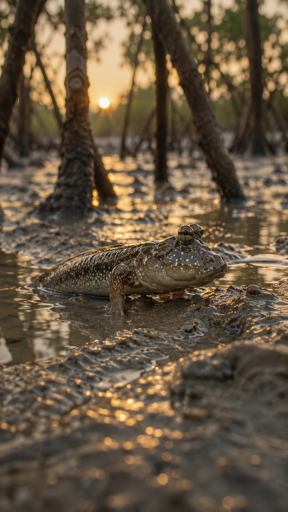
Evolution
This fish is doing something no fish is supposed to be able to do — breathing air, propped on its own fins, out of the water.
Look at the mudskipper in this photo (Periophthalmus), propped up on its front fins directly on wet Sundarbans mud, half in and half out of a shallow tidal pool. It's a fish. It's also, right now, doing something that looks a lot like the very first steps our own distant ancestors took out of the water, hundreds of millions of years ago.
Evolutionary biologists study exactly this kind of transition — through fossils, through similarities in body structure across very different species, and through living examples like this mudskipper, which can breathe partly through its skin and moist gill chambers, letting it survive out of water for hours at a time. Small, useful variations like this one get passed on more often than others, generation after generation, through natural selection — and over enough time, entire new ways of living emerge from populations that once looked nothing like this.
There's even a simple equation, the Hardy-Weinberg principle, that describes exactly what a population's genetics would look like if evolution stopped completely — no mutation, no selection, no migration. It's useful precisely because real populations, including every mudskipper population in the Sundarbans, never actually match it. Something is always nudging them to change.
But everything in this chapter — natural selection, adaptive radiation, a mudskipper's slow crawl toward land — assumes life already exists and is already replicating itself. None of it explains the one step that had to happen first: how any self-replicating molecule ever arose out of ordinary, non-living chemistry on the early Earth in the first place.
Before evolution could even begin shaping anything, how did the very first self-replicating molecule arise out of non-living chemistry at all?
2-Day Crash Course.Master this Chapter.
Click here.
Biology & Human Welfare
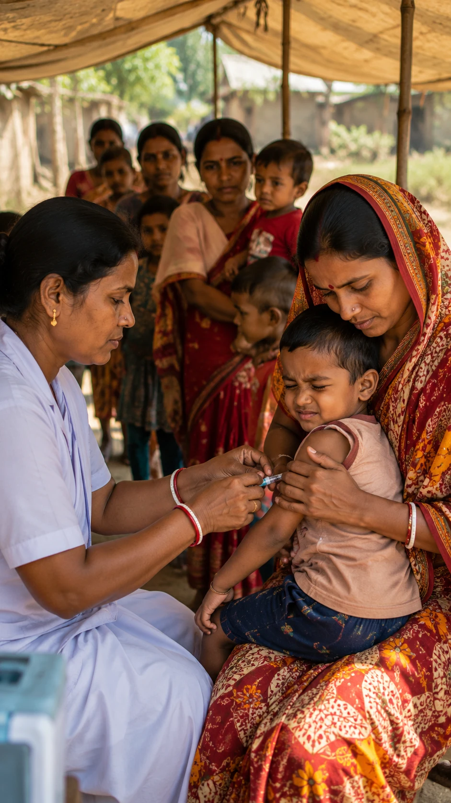
Human Health and Disease
That one small injection is teaching this child's body to fight a war it hasn't even seen yet.
Look at this photo — a nurse giving a young child a vaccine at a rural immunisation camp, the child's mother holding him steady. That small injection isn't treating any disease he currently has. It's teaching his immune system to recognise and defeat one he hasn't met yet.
His body's defence runs on two systems. Innate immunity is the fast, general-purpose response — skin, mucus, and cells that attack anything foreign on sight. Acquired immunity is slower, but far more precise: specialised cells learn to recognise one specific invader and build antibodies shaped exactly to it, then keep a memory of that shape for years, sometimes for life. A vaccine works by safely showing the immune system that shape in advance, so if the real infection ever arrives, his body already knows exactly how to fight it.
Most infections eventually lose this fight, once the immune system has learned their shape. HIV is a rare, brutal exception. It specifically infects and destroys the very helper T-cells that would normally organise the whole defence against it — disabling the general in the middle of the battle, rather than just fighting the soldiers.
Even when antiretroviral drugs successfully suppress HIV to undetectable levels in the blood, a small number of infected cells go completely dormant, hiding the virus's genetic material where neither the immune system nor the drugs can reach it — sometimes for decades.
How can we find and clear out that hidden, dormant reservoir of HIV — the one thing standing between "controlled" and actually "cured"?
2-Day Crash Course.Master this Chapter.
Click here.
Microbes in Human Welfare
Every one of those clay pots is a colony of billions of bacteria, working a night shift nobody ever sees.
Look at these clay pots of mishti doi in the photo, sitting on a shop shelf, caramel-brown skins just set on top. Nobody in this shop had to do the actual work of turning sweetened milk into this — billions of bacteria did, quietly, overnight, exactly as they've done for thousands of years.
The same bacteria (Lactobacillus) that turn milk into ordinary curd are doing the work here too, converting milk sugar into lactic acid, which thickens the milk and gives mishti doi its tang under all that sweetness. Scale this same basic idea up, and microbes are quietly running much bigger jobs too — brewing antibiotics, fermenting alcohol, producing organic acids and enzymes used across entire industries, all using the same principle: let a microorganism do a chemical job better than any factory could.
Beyond the kitchen, other microbes are put to work treating a city's entire sewage supply, breaking down waste into safer byproducts. Others get fed into biogas plants, converting cow dung and organic waste into usable fuel. Still others are sprayed onto crops as safe biological pesticides, or added to soil as biofertilisers that pull nitrogen straight out of the air for a plant's use — all without a single dose of any factory-made chemical.
But here's what should be startling. Despite everything microbes already do for us, scientists estimate that well over 99 percent of microbial species on Earth have never actually been grown in a lab — DNA sequencing proves they're out there, in soil and water and even inside us, but nobody has figured out how to culture most of them at all.
If we can't even grow 99 percent of Earth's microbes in a lab, what exactly are the rest of them doing out there, completely unstudied?
2-Day Crash Course.Master this Chapter.
Click here.
Biotechnology
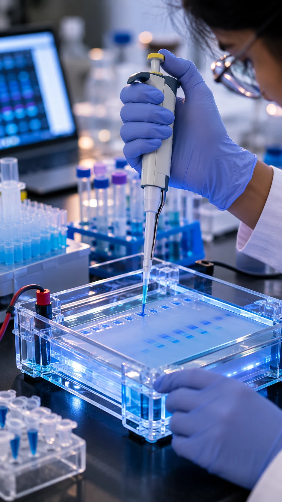
Biotechnology: Principles and Processes
Those hands are about to cut and paste genetic material between two completely unrelated species — and it's routine enough to do before lunch.
Look at this photo — gloved hands carefully loading a sample into a gel, faint blue light glowing from the equipment. What's actually happening here is almost absurd when you say it plainly: cutting a gene out of one species and inserting it into the DNA of a completely different one, on purpose, precisely enough to work every time.
The tool making this possible is a restriction enzyme — a molecular pair of scissors that only cuts DNA at one exact sequence of letters, every time, with no mistakes. Cut the desired gene out with one of these, cut open a small circular loop of bacterial DNA called a plasmid the same way, glue the two together with a different enzyme, and slip the whole thing into a bacterium like Escherichia coli. That one bacterium, and every descendant it produces by simply dividing, now carries and runs the inserted gene as if it were its own.
This exact process is how most of the world's insulin is made today. Instead of extracting it painstakingly from animal pancreases, the human insulin gene is inserted into bacteria, which are then grown by the vat-load, quietly manufacturing human insulin as a byproduct of just staying alive.
Here's what's easy to forget while watching hands work this precisely in a lab: that molecular scissors didn't get invented by any scientist. It evolved in bacteria billions of years ago, purely as a defence system to shred the DNA of invading viruses. We simply found it, and borrowed it.
If bacteria are still locked in an arms race with viruses, evolving new molecular scissors all the time, how many more of these natural tools are out there that we haven't found yet?
2-Day Crash Course.Master this Chapter.
Click here.
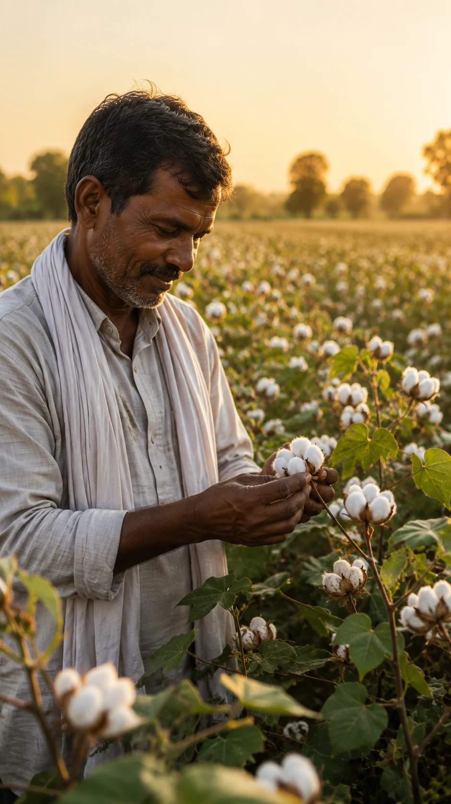
Biotechnology and its Applications
This cotton plant defends itself against pests using a gene it was never born with.
Look at this photo — a farmer turning over a healthy, unblemished cotton boll (Gossypium) in his hand, no pest damage anywhere on the surrounding leaves. This particular cotton plant isn't naturally this resistant. It's carrying a single borrowed gene that does the job for it.
That gene originally comes from a common soil bacterium, Bacillus thuringiensis, which naturally produces a protein that's lethal to the larvae of specific pest insects — and essentially harmless to humans, birds, or almost anything else that might eat the plant. Insert that one bacterial gene into a cotton plant's own genome, and the plant starts manufacturing its own pesticide, inside its own tissue, without a single external spray.
The same underlying technique extends far beyond cotton — inserting corrective genes directly into patients with certain inherited disorders, breeding transgenic animals that produce human proteins in their milk, or engineering crops to survive drought or resist disease. Every one of these applications goes through strict biosafety review before release, because inserting a new gene into a living organism, and letting it reproduce, is a permanent, self-copying change once it's out in a field or a body.
Biology can tell us precisely what a gene like this one does, and how reliably it does it. What biology can't tell us is how far this kind of modification should be allowed to go — in a crop, in an animal, or eventually, in a person.
So who actually gets to decide how far this kind of genetic modification should go — and by what standard?
2-Day Crash Course.Master this Chapter.
Click here.
Ecology & Environment
Organisms and Populations
Every winter, this exact flock finds this exact wetland again — and nobody fully knows how.
Look at this photo — a flock of Asian openbill storks (Anastomus oscitans) dropping out of the evening sky onto a Bengal wetland, wings still spread mid-landing. Many of these birds flew here from hundreds of kilometres away, and they'll do it again next year, landing on roughly the same wetland, around roughly the same week.
A population like this flock isn't just a pile of individual birds — ecologists measure it by its density, its birth and death rates, and how those numbers shift the population size over time. Left with unlimited food and space, a population would grow exponentially, doubling and doubling again. In the real world, food, space, and predators eventually push back, bending that growth into a slower S-shaped curve called logistic growth instead.
Every population also exists inside a web of interactions with others around it — competing with other species for the same fish in the same wetland, avoided by some predators and hunted by others. But what's happening in this photo is something else entirely: an entire population making a coordinated, timed journey across a continent, together, without a single leader directing it.
Scientists have tracked flights like this one for decades, and they have real clues — some birds seem to sense the Earth's magnetic field, others seem to use star patterns as a compass. But no one has fully explained how a bird combines these clues precisely enough to find this one wetland, out of an entire continent, year after year.
So how does a migratory bird actually navigate thousands of kilometres back to this one exact wetland, year after year?
2-Day Crash Course.Master this Chapter.
Click here.
Ecosystem
One creek, one sunrise, and an entire economy of energy quietly moving from mud to bird.
Look at this photo — a Sundarbans mangrove creek at sunrise: tangled prop roots in the foreground, a fiddler crab on the mud, a kingfisher watching from a low branch. This single frame is quietly showing an entire ecosystem's economy of energy, moving from one level to the next.
It starts with the mangrove trees themselves, capturing sunlight and building sugar through photosynthesis — their gross primary productivity. Whatever energy they don't spend on their own respiration becomes new plant tissue, available to everything else in the creek. A crab feeding on that plant material captures only a fraction of the energy it contains; a kingfisher eating a fish that ate smaller creatures captures an even smaller fraction still. At each step up this food chain, roughly ninety percent of the energy is lost as heat, which is exactly why food chains rarely run past four or five levels before there simply isn't enough energy left to support another one.
Energy in this creek only ever flows one way, but matter doesn't disappear — it cycles. Fallen leaves, dead crabs, and waste get broken down by decomposers, releasing the same nutrients back into the mud for the mangrove roots to absorb all over again. The same handful of atoms move endlessly through this creek's food web, generation after generation.
That "ninety percent lost at each step" figure is really just a convenient average. Measure it in different real ecosystems, and the actual transfer efficiency swings anywhere from under one percent to over twenty.
Why does energy-transfer efficiency swing so wildly between real ecosystems, when ecologists still can't predict any one ecosystem's exact number from first principles?
2-Day Crash Course.Master this Chapter.
Click here.
Biodiversity and Conservation
This might be the most famous animal in Bengal — and we still don't know how many species share its forest with it.
Look at this photo — a Royal Bengal Tiger (Panthera tigris tigris) moving quietly through misty Sundarbans mangroves at dawn, its reflection faint in the shallow water at its feet. It's the most recognisable resident of this forest. It is very likely not even close to being the only species here that's never been properly counted.
Biodiversity isn't just a species count. It includes the genetic variation within a single species like this tiger, the sheer number of different species sharing its forest, and the diversity of entire ecosystems like the mangroves themselves. Regions closer to the equator consistently host more species than regions further from it, and biodiversity hotspots — covering under two percent of Earth's land surface — hold roughly half of all the plant species we've ever catalogued.
Fewer than four thousand tigers like this one are estimated to remain in the wild worldwide, mostly because the forests they need have been shrinking for a century. Protecting species like this usually means two strategies working together: in-situ conservation, protecting the actual forest the tiger lives in, and ex-situ conservation, breeding endangered species safely elsewhere as a backup, in case the wild population fails.
But step back from the tiger for a moment, to the forest around it. Our best estimates for the total number of species on Earth range from about 5 million to over 1 trillion, once every microbe is counted — a thousand-fold gap in our own uncertainty.
If our estimate for life on Earth is uncertain by a factor of a thousand, how much of it might disappear before we've ever even counted it?
2-Day Crash Course.Master this Chapter.
Click here.
Accelerate your career. Get the world-class guidance you deserve. Start today.
Contact directly
support@4sh.education
State Boards · CBSE · ICSE · Medical